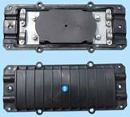
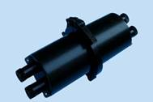
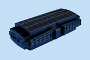
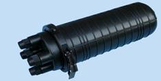
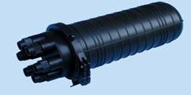

Cable Splice Tray（光缆接头盒）
a.Cable Splice Tray - Horizontal Type

整体式

中间开式

卡式
（Cable Splice Tray - Horizontal Type ）
Features
* Suitable for aerial or direct buried installation or hanging on wall in manboles
* Simple and fast sealing for the box and cable entrance, can be repeat used
* Optimized design for fiber routing to ensure cable bending radius and fiber density
* Single or Ribbon fiber splicing tray can be selected for different cable structure
* Splicing tray turning angle is greater than 90 degrees, easy to maintain and expand
* Internal cable fixtures makes it more secure and reliable
Type |
In / Out |
Maximum fiber count on Single Tray |
Maximum Tray Number |
Maximum Splicing Fiber |
Sealing Material |
GTJ-H001 |
2 / 2 |
12 (single) / 24 (single) |
4 |
48 (single) / 96 (single) |
Silastic |
GTJ-H002 |
2 / 2 |
12 (single) / 72 (ribbon) |
4 |
48 (single) / 288 (ribbon) |
Silastic |
GTJ-H003 |
3 / 3 |
36 (single) / 72 (ribbon) |
5 |
180 (single) / 360 (ribbon) |
Silastic |
GTJ-H004 |
4 / 4 |
12 (single) / 72 (ribbon) |
8 |
96 (single) / 576 (ribbon) |
Silastic |
b.（Cable Splice Try - Vertical Type ）

IN2/OUT2

IN3/OUT3
Features
* Suitable for aerial or direct buried installation or hanging on wall in manboles
* Simple and fast sealing for the box and cable entrance, can be repeat used
* Optimized design for fiber routing to ensure cable bending radius and fiber density
* Single or Ribbon fiber splicing tray can be selected for different cable structure
* Splicing tray turning angle is greater than 90 degrees, easy to maintain and expand
* Internal cable fixtures makes it more secure and reliable
Type |
In / Out |
Maximum fiber count on Single Tray |
Maximum Tray Number |
Maximum Splicing Fiber |
Sealing Method |
GTJ-M001 |
2 / 2 |
12(single) / 24(single) / 72(ribbon) |
6 |
72(single) / 144(single) / 432(ribbon) |
Thermoplastic |
GTJ-M002 |
3 / 3 |
12(single) / 24(single) / 72(ribbon) |
4 |
48(single) / 96(single) / 288(ribbon) |
Thermoplastic |
GTJ-M003 |
3 / 3 |
24 (single) |
4 |
96 |
Thermoplastic |
GTJ-M004 |
4 / 4 |
36 (single) |
7 |
256 (single) |
Thermoplastic |